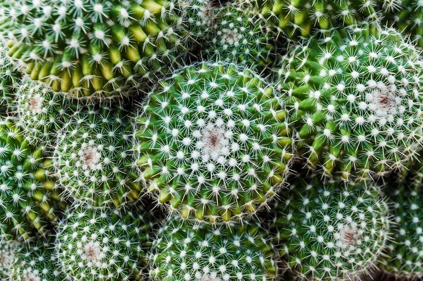

Pequeñas plantas
Introducción
Son comunes en los hogares y, además, perfectas tanto para quienes son amantes de las plantas como para aquellos a los que se les resisten las plantas. Pero, a menudo, nos equivocamos al denominarlas. ¿Existen realmente diferencias entre cactus, crasas y suculentas? Curiosamente, la botánica no las distingue tanto: cactus y crasas pertenecen a la misma familia vegetal (la familia de las suculentas) con una salvedad importante. Que el lugar en el que han crecido, por circunstancias climáticas, ha variado la evolución de la especie. Una respuesta natural de adaptarse al medio en el que viven que también marca de manera inevitable su forma de guardar el agua.
